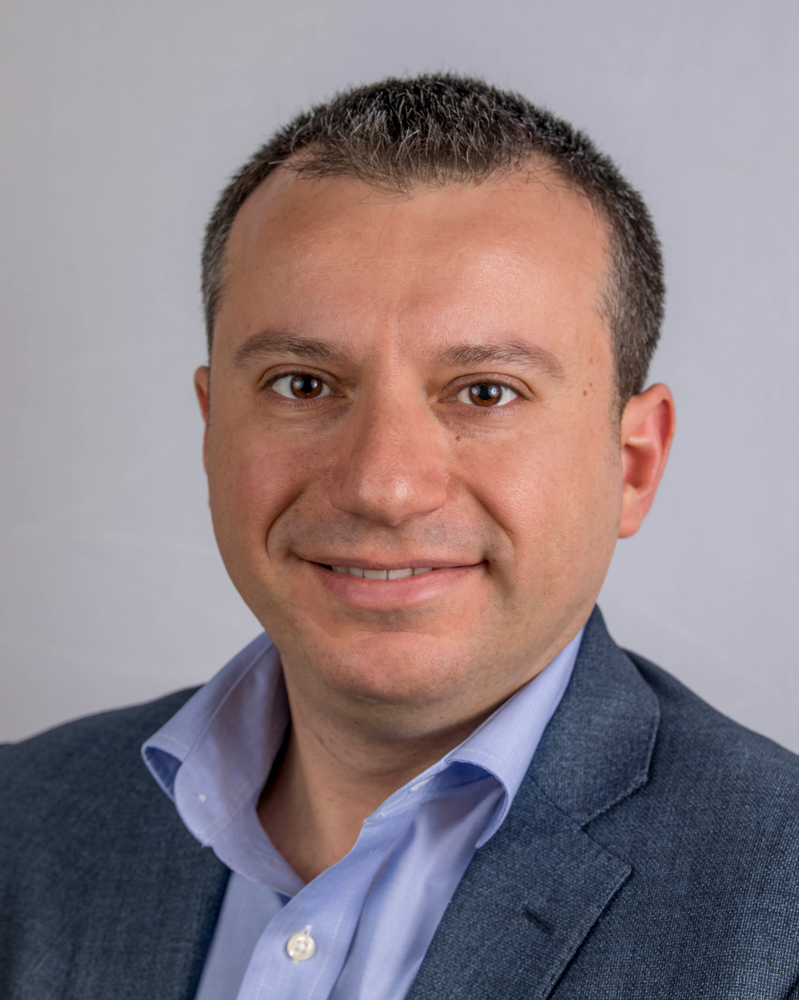
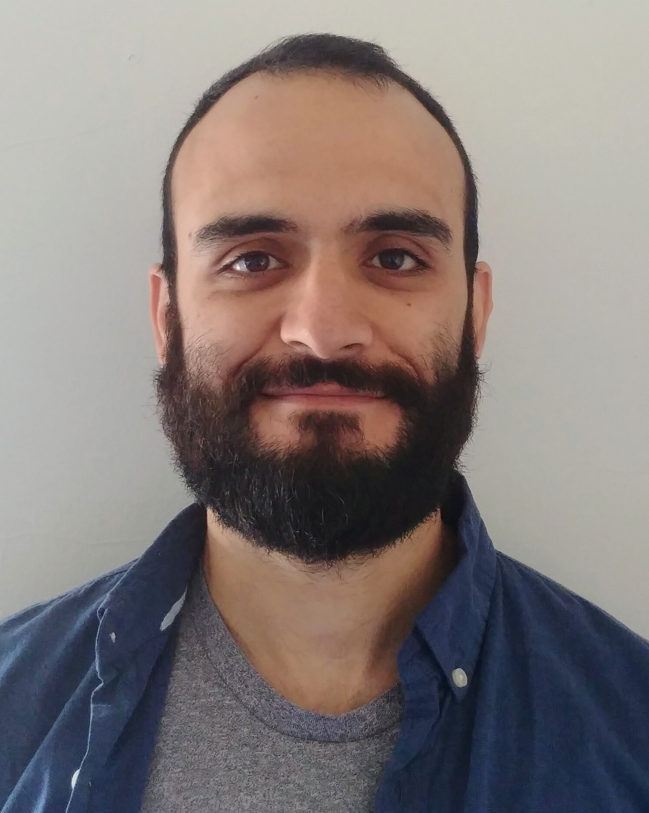
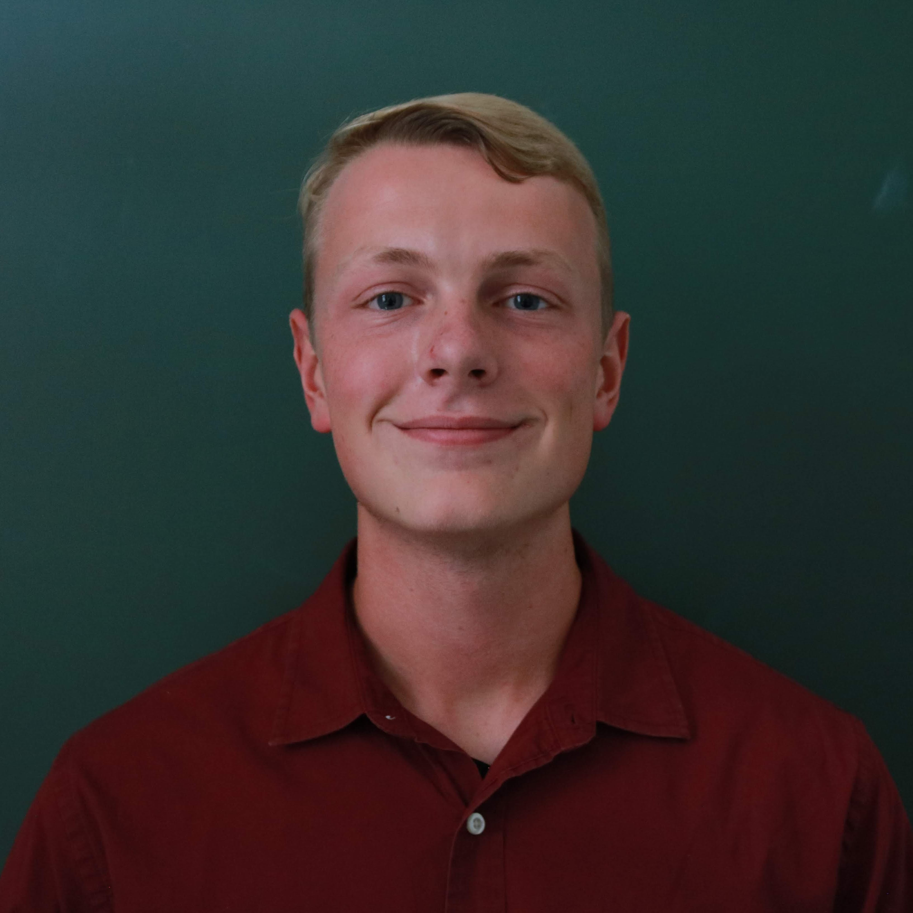
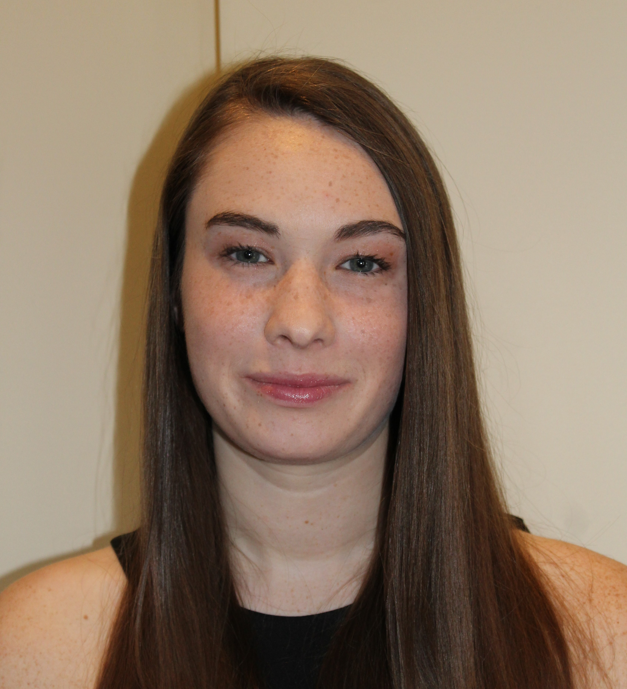

Faculty

Dr. Nikolaos Vitzilaios, PhD
Assistant Professor, Department of Mechanical Engineering
Ph.D., Mechanical Engineering, Technical University of Crete, Greece, 2010M.Sc., Mechanical Engineering, Technical University of Crete, Greece, 2005
B.Sc., Mechanical Engineering, Technical University of Crete, Greece, 2004
Dr. Nikos Vitzilaios is an Assistant Professor of Robotics in the Department of Mechanical Engineering at the University of South Carolina (UofSC). He is the Director of the Unmanned Systems & Robotics Laboratory (USRL) working on perception, navigation and control of unmanned systems focusing on unmanned aircraft. USRL has a fleet of 25 drones including commercial, customized, and in-house built systems used in several monitoring\inspection applications. At the UofSC he teaches courses in robotics, control theory, mechatronics and engineering graphics and visualization.
Dr. Vitzilaios has more than 15 years of experience in the field of aerial drones; he earned his PhD in 2010 working on the autonomous control of small-scale unmanned helicopters. As a Postdoctoral Fellow at the University of Alberta (2011-2012) he worked on nonlinear control of heavy lift unmanned helicopters. As a Research Scientist (2012-2015) at the University of Denver, he worked on a National Science Foundation project on the development and integration of teams of aerial and ground robots. Prior to joining UofSC (2017) he was a Senior Lecturer of Robotics at Kingston University London (United Kingdom) where he was elected a Fellow of the Higher Education Academy.
Dr. Vitzilaios has more than 35 publications in international conferences and journals. He is a Senior Member of IEEE (Institute of Electrical and Electronics Engineers), member of AIAA, AUVSI, IFAC and member of the organizing committee of the annual International Conference on Unmanned Aircraft Systems (ICUAS). He is also a FAA Part 107 sUAS certified pilot.
College Website
LinkedIn Test
PhD Students

Michail Kalaitzakis
Ph.D Student, Department of Mechanical Engineering
Dipl. Mechanical Engineering, National Technical University of Athens, Greece, 2011Personal Website
Bhanuprakash Kosaraju
Ph.D Student, Department of Mechanical Engineering
M.Sc., Mechanical Engineering, University of South Carolina, Columbia 2021B.Sc., Mechanical Engineering, Visvesvaraya Technological University, India 2017
Kazi Ragib Ishraq Sanim
Ph.D Student, Department of Mechanical Engineering
B.Sc., Bangladesh University of Engineering and Technology, February 2021Personal Website
Masters Students
Undergraduate Students

Brennan Cain
Bachelors Student, Department of Computer Science and Engineering
B.Sc.E., Computer Engineering (Math minor), University of South Carolina, December 2021Personal Website
Zachary Kearney
Bachelors Student, Department of Mechanical Engineering
B.Sc., Mechanical Engineering (Electrical Engineering minor), University of South Carolina, May 2023Anand Ambrosi
Bachelors Student, Department of Mechanical Engineering
B.Sc., Mechanical Engineering (Math minor), University of South Carolina, May 2023Keith Lewandowski
Bachelors Student, Department of Mechanical Engineering
B.Sc., Mechanical Engineering, University of South Carolina, May 2023Tyler Gass
Bachelors Student, Department of Mechanical Engineering
B.Sc., Mechanical Engineering, University of South Carolina, May 2023Alumni
Camden Whitehead
Bachelors Student, Department of Mechanical Engineering
B.Sc., Mechanical Engineering (Electrical Engineering minor), University of South Carolina, May 2023

Kaitlyn Songer
Bachelors Student, Department of Mechanical Engineering
B.Sc., Mechanical Engineering (Electrical Engineering minor), University of South Carolina, May 2023Sabrina Carroll
M.Sc., Mechanical Engineering, University of South Carolina, August 2020B.Sc., Mechanical Engineering, University of South Carolina, May 2019